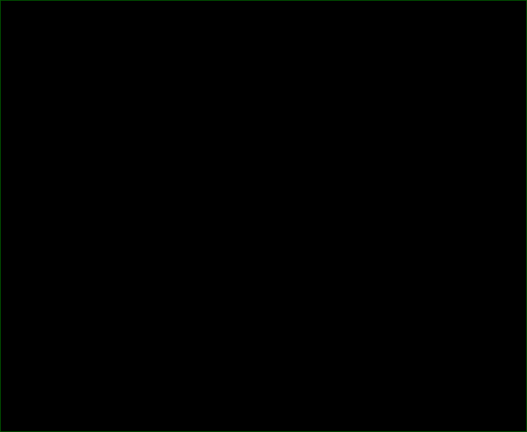

Select a Photo Gallery
Anemones
Corals
Crabs
Greenlings
Gunnels
Jellyfish
Marine Birds
Marine Mammals
Nudibranchs
Giant Pacific Octopus
Octopus - Red
Other Fish
Other Invertebrates
Perch
Rockfish
Sculpins
Seastars
Seaweeds
Shrimp
Snailfish
Snails
Sponges
Squids
Six-gill Sharks
Wolf Eel
Warbonnets
Emerald Diving
Explore the coastal and inland waters of
Washington and BC
Photo Gallery Slideshow
Photo Gallery Slideshow

See additional crab imagery:


, Whale Rocks, San Juan Islands WA")